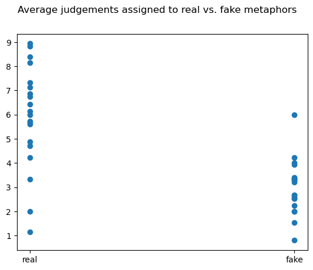

from nbdev.showdoc import *
import numpy as np
import scipy
import sklearn
from tqdm.notebook import trange, tqdm
import matplotlib.pyplot as pltThe autoreload extension is already loaded. To reload it, use:
%reload_ext autoreloadfrom nbdev.showdoc import *
import numpy as np
import scipy
import sklearn
from tqdm.notebook import trange, tqdm
import matplotlib.pyplot as pltThe autoreload extension is already loaded. To reload it, use:
%reload_ext autoreloadWe’ll first examine the relationship between the mean score given to each mapping and whether it was human generated.
import scipy.stats
pearson_correlation = scipy.stats.pearsonr(ground_truth, numerical_results)
print(f"{pearson_correlation =}")pearson_correlation =PearsonRResult(statistic=0.6654383067213117, pvalue=2.8015990134566568e-06)import matplotlib.pyplot as plt
plt.scatter(ground_truth_textual, numerical_results)
plt.suptitle("Average judgements assigned to real vs. fake metaphors")Text(0.5, 0.98, 'Average judgements assigned to real vs. fake metaphors')
This plot shows the desired relationship pretty clearly. The audience can tell the difference between the average human generated metaphor and the average random “malaphor”.
Curiously, there were many human-generated metaphors that scored really low, and a few computer-generated metaphors that scored fairly high – though, on average, no higher than six. Let’s sample some of these to see what happened:
k = 3 # get k lowest ranked real metaphors
min_metaphor_idx = np.argpartition(results_on_real, k)[:k]
for mm in min_metaphor_idx:
print(f"{metaphor_battery_real[mm]} with score {results_on_real[mm]}")Soccer and Nuclear Missiles - How strong is the metaphor? with score 1.14285714285714
Skyscrapers and Pringles Chips - How strong is the metaphor? with score 2.0
Restaurants and College Classes - How strong is the metaphor? with score 3.33333333333333These are admittedly pretty random. I had a specific idea in mind to relate them, but this didn’t translate – or perhaps the audience just wasn’t thinking hard enough!
What are the most well ranked metaphors?
Here are the best-performing real metaphors:
k = 3
max_metaphor_idx = np.argpartition(results_on_real, -k)[-k:]
for mm in max_metaphor_idx:
print(f"{metaphor_battery_real[mm]} with score {results_on_real[mm]}")Writing a Book and Running a Marathon - How strong is the metaphor? with score 8.4
Tropical Cyclones and Bad Moods - How strong is the metaphor? with score 8.93333333333333
The Armed Forces and an Ant Colony - How strong is the metaphor? with score 8.8125And here are the best-performing fake metaphors:
k = 3
max_metaphor_idx = np.argpartition(results_on_fake, -k)[-k:]
for mm in max_metaphor_idx:
print(f"{metaphor_battery_fake[mm]} with score {results_on_fake[mm]}")Baseball Catchers and Journalists - How strong is the metaphor? with score 4.0
Memory and Television - How strong is the metaphor? with score 4.23529411764706
The President and a Film Actor - How strong is the metaphor? with score 6.0The last one is especially good. The dice sometimes get lucky.
Just for fun, here are the absolute worst performing metaphors:
k = 5
min_metaphor_idx = np.argpartition(numerical_results, k)[:k]
for mm in min_metaphor_idx:
print(f"{metaphor_battery[mm]} with score {numerical_results[mm]}")An Elementary School and a Solar Eclipse - How strong is the metaphor? with score 1.52941176470588
Musical Albums and Sea Urchins - How strong is the metaphor? with score 0.8
Soccer and Nuclear Missiles - How strong is the metaphor? with score 1.14285714285714
Skyscrapers and Pringles Chips - How strong is the metaphor? with score 2.0
Department Stores and Soccer Teams - How strong is the metaphor? with score 2.0